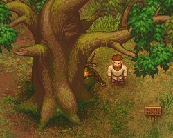
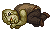
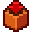
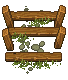
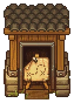
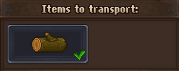
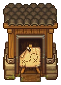
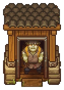

Felling site
| Felling site | |
|---|---|
 | |
Location information
| |
Buildable
|
True |
Exits
|
Forest near the river |

The felling site (aka the Saw Mill) is located near the path leading through the eastern half of the forest near the river. First, you just find a sign there. After unlocking Zombie Woodcutting, you are able to build a single, but complex sawmill.
With at least one  log supply.
log supply.
Building Sign
Here is, where you first set up the sawmill.
| Blueprint | Required Materials | Notes |
|---|---|---|
| Start building sawmill | 12× Flitch 4× Nails 1× Axe I |
Requires Zombie Woodcutting |

Huge Tree
The sawmill includes a huge tree (upper left corner). This is where you may put a zombie to work, which keeps on cutting down trees, until the timber stockpile overflows with  logs. This sign
logs. This sign

Timber Stockpile

The sawmill comes already complete with the stockpile (bottom middle). It has a capacity of 9× log. You can deposit or remove logs manually here. The zombie also deposits its cut down logs there.
log. You can deposit or remove logs manually here. The zombie also deposits its cut down logs there.
Porter Station


A porter station is also included in the sawmill (bottom right corner). It's used for  logs only. If you assign a zombie here, it hauls the logs back to the timber stockpile of your workyard. If both stockpiles are full, it hauls the log to and from without dropping it
logs only. If you assign a zombie here, it hauls the logs back to the timber stockpile of your workyard. If both stockpiles are full, it hauls the log to and from without dropping it
Unemploying


If you want to get the porter zombie off its work, you can deselect the logs and wait until it's back to the station. It enters there and waits for further commands. You can then hit "E" to get it off the station.
The other possibility is to intercept the porter zombie, stand in its way, and talk to it by hitting "E". In this case, the porter drops all the logs it is currently hauling around.
To get rid of the woodcutter, stand right behind it and hit "E".
| |||||